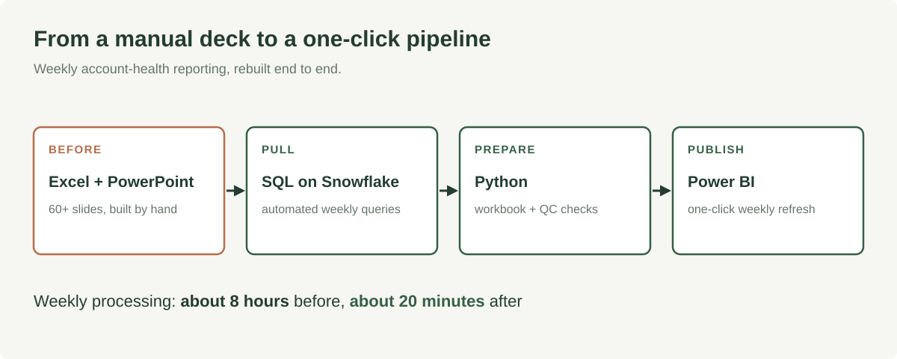
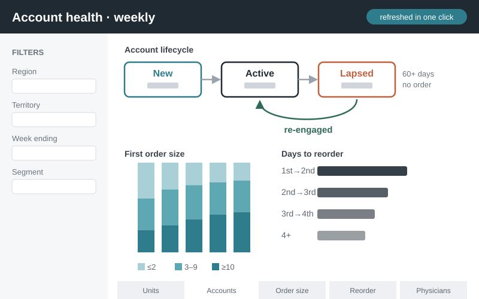

Replacing a 60+ slide deck with a one-click dashboard
I rebuilt a weekly account-health report, a 60+ slide deck assembled by hand in Excel and PowerPoint, as an automated pipeline. Weekly processing went from about 8 hours to about 20 minutes.

The problem
An eyecare brand team reviewed account health every week: which accounts were ordering, which had gone quiet and which had come back. The report was a 60+ slide deck built by hand from Excel extracts. It took most of a day each week.
What I built
I migrated every piece of it. SQL on Snowflake pulls the weekly sales, account and physician data. Python joins it into a master workbook and runs QC checks. Power BI reads that workbook, so the weekly refresh is one click. The QC step checks each week against the last published numbers and flags restatements above 5% for review.
The dashboard tracks units, ordering and new accounts, accounts that lapse (no order in 60+ days) or re-engage, first-order size, time to reorder and physician segments by territory.

What happened
Weekly processing went from about 8 hours to about 20 minutes. I delivered it within a 3-month deadline, and leadership could check the latest KPIs in the dashboard instead of waiting for the weekly deck. The same setup was later adopted across other therapeutic areas.
Anonymized professional case study. The client, brand, internal systems and data are omitted. Figures are reconstructions with no client values.